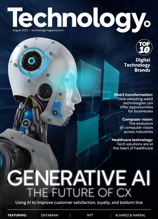
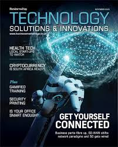
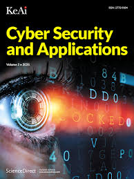

Generative AI The future of CX

Generative AI refers to artificial intelligence systems capable of creating new content such as text, images, music, or videos based on the data they have been trained on. Utilizing advanced machine learning models, particularly neural networks, these systems can produce outputs often indistinguishable from those created by humans. Prominent models in generative AI include Generative Adversarial Networks (GANs), which consist of two neural networks (a generator and a discriminator) working together to create realistic data, and Transformer models like GPT, which generate coherent and contextually relevant text. This technology has wide-ranging applications, from creative arts and content generation to enhancing data augmentation and simulation in various industries.
Technology solutions and innovations

Technology solutions and innovations are driving forces behind the rapid advancements in various industries today. These solutions encompass a wide range of applications, from cloud computing and artificial intelligence to blockchain and the Internet of Things (IoT). Cloud computing offers scalable and flexible resources, enabling businesses to operate more efficiently and cost-effectively. Artificial intelligence and machine learning are transforming how we analyze data, make decisions, and automate processes, leading to smarter and more intuitive systems. Blockchain technology provides secure and transparent transaction records, revolutionizing finance, supply chain, and healthcare sectors. The IoT connects devices and sensors, facilitating real-time data collection and analysis, which improves operational efficiency and enables new business models. Innovations such as 5G technology, augmented reality (AR), and virtual reality (VR) are further expanding the possibilities, enhancing connectivity, and creating immersive experiences. Together, these technological advancements are not only solving complex problems but also paving the way for a more interconnected and intelligent future.
Cyber Security and applications,enhanced Privacy

Cybersecurity is essential for protecting systems, networks, and data from digital attacks, unauthorized access, and other cyber threats. As cyber threats evolve and become more sophisticated, robust cybersecurity measures are critical across all sectors. Key aspects of cybersecurity include network security, which safeguards internal networks from intrusions by securing infrastructure and data transfers, and application security, which focuses on keeping software and devices free from threats. Additionally, information security protects the integrity and privacy of data both in storage and in transit. Cybersecurity applications range from firewalls and antivirus software to more advanced solutions like intrusion detection systems, encryption tools, and multi-factor authentication. These technologies work together to detect, prevent, and respond to cyber incidents, ensuring the protection of sensitive information and maintaining the trust and reliability of digital services.